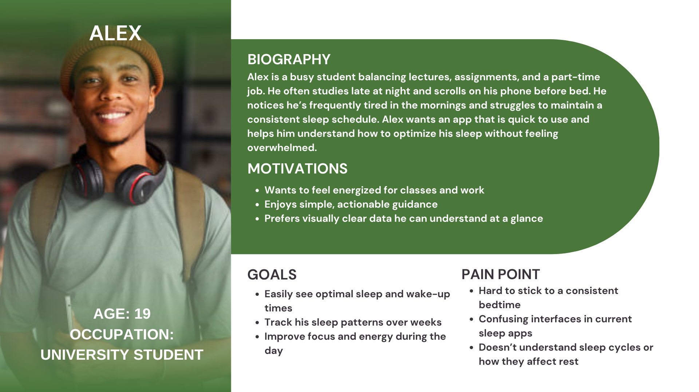
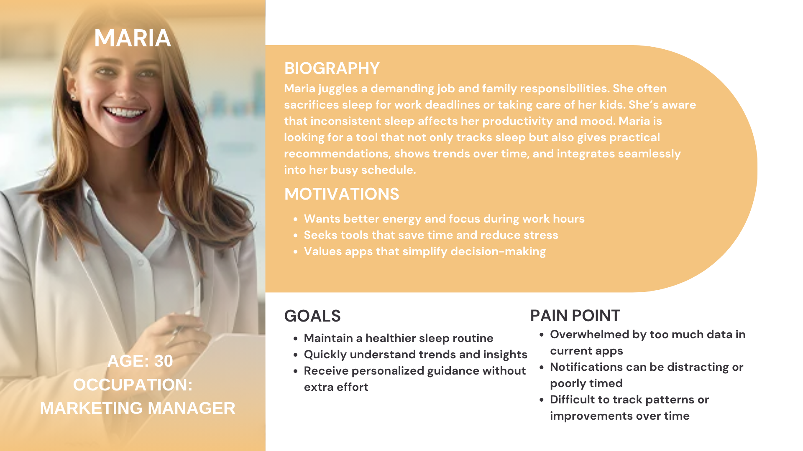
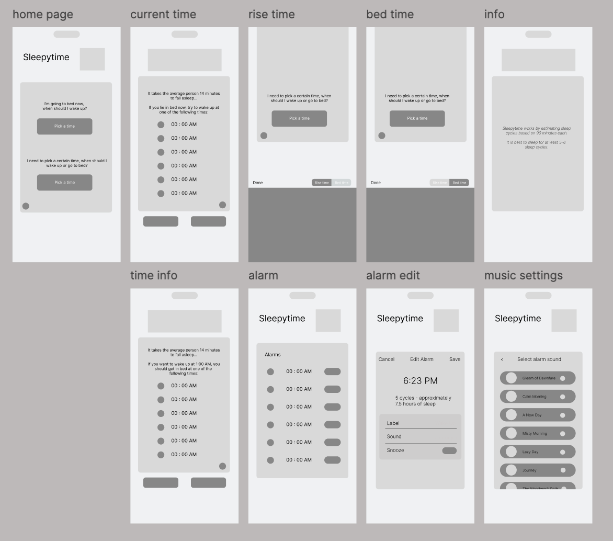

SleepyTime App
SleepyTime is a sleep cycle calculator that helps users find the best time to fall asleep or wake up. I redesigned the app to improve its usability, visual design, and overall sleep experience while maintaining its simplicity.
Objective
The objective of this project was to redesign the SleepyTime app to improve usability, visual appeal, and functionality. I aimed to create a calm, intuitive experience that helps users determine their ideal sleep and wake times while making navigation easier. The redesign introduces an alarm feature and simplified buttons to streamline user interaction.
Problems (Key Pain Points)
Navigation
Users struggled to go back after calculating sleep times.
No Alarm Feature
The original app didn’t notify users when it was time to sleep or wake up
Limited Personalization
Users couldn’t adjust settings to fit their own sleep patterns.
Research
To better understand travelers’ needs and guide the design of SleepyTime, light research and competitive analysis were conducted. The goal was to identify common pain points and opportunities for improvement.
Competitive Analysis
| App Evaluated | Identified Strength | Identified Limitation |
|---|---|---|
| Sleep Cycle | Personalized wake-up times based on sleep cycles Gentle alarm sounds for a natural wake-up experience | Some features hidden behind paywall Can feel overwhelming for first-time users |
| Calm | Soothing visuals and animations Guided features for sleep, meditation, and bedtime routines Highly accessible with clear typography and contrast | Multiple features may distract users who only want a sleep calculator |
| Pillow | Automatic sleep tracking Clear charts and analytics of sleep patterns Easy-to-set bedtime/wake-up reminders | Some charts may be confusing for casual users UI can feel cluttered on smaller screens |
Target Personas


Wireframes
Initial wireframes were developed to explore layout structure and user flow for Wanderly . The goal was to organize key features, trip planning, activity discovery, and budget tracking, in a simple and intuitive way before moving into detailed design. Based on early feedback, adjustments were made to button placement, screen spacing, and tab navigation for smoother usability.

Test & Iterate
Usability Testing: 5 users tested core tasks; users found new buttons and alarm intuitive Integration: High-fidelity clickable prototype in Figma showing full sleep calculation → alarm Outcome: Reduced cognitive load, improved navigation, enhanced calming visual experience.
Iterations Made:
- Added a Set Alarm feature for easier sleep reminders.
- Simplified navigation with clearly labeled buttons.
- Improved accessibility with larger fonts, higher contrast, and icon labels.
Reflection
This project reinforced the importance of user-centered design. Small changes like alarms, clear buttons, and a calming interface can make a big difference in usability. In the future, I would explore adding a sleep journal and gentle wake-up animations to further enhance the experience.